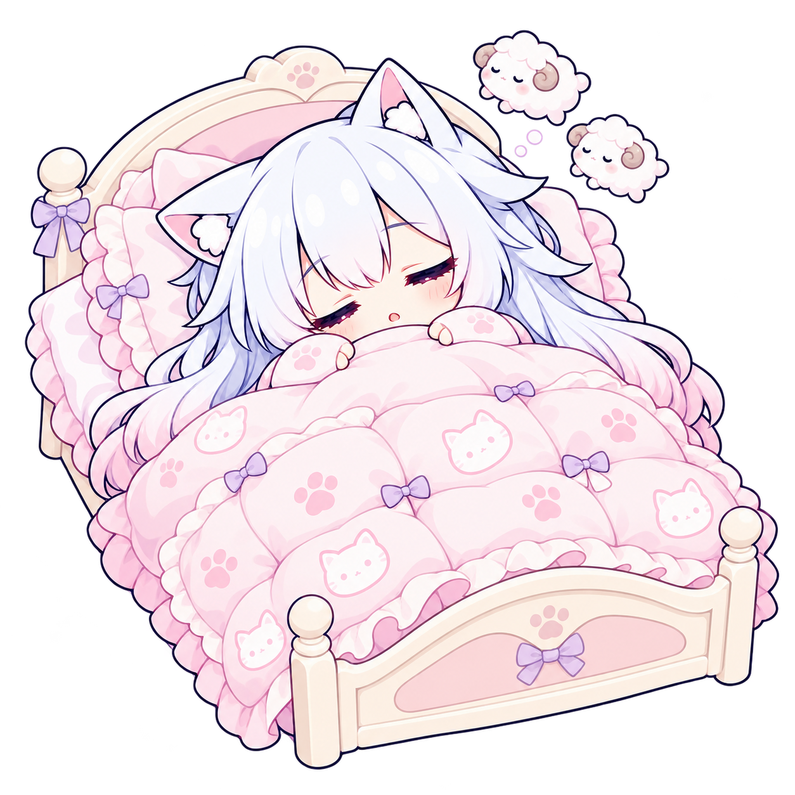

<!doctype html>
<html lang="zh-Hant">
<meta charset="UTF-8">
<meta name="viewport" content="width=device-width, initial-scale=1">
<title>QueueCat · 她的小房間</title>
<style>
  * { box-sizing: border-box; }
  body { margin: 0; padding: 40px; background: #fbf9f4; color: #39313f; font: 16px/1.7 system-ui, sans-serif; }
  main { max-width: 1500px; margin: auto; }
  h1 { margin: 0; font-size: 30px; }
  p { color: #6d6576; margin: 8px 0 30px; }
  .scenes { display: grid; grid-template-columns: repeat(5,minmax(0,1fr)); gap: 24px; }
  figure { margin: 0; min-width: 0; }
  figure img { display: block; width: 100%; aspect-ratio: 1; object-fit: contain; }
  figcaption { margin-top: 16px; text-align: center; }
  strong { display: block; font-size: 18px; }
  span { color: #6d6576; font-size: 14px; }
  footer { margin-top: 36px; border-top: 1px solid #e7e1e7; padding-top: 18px; color: #6d6576; font-size: 14px; }
  @media (max-width: 850px) { .scenes { grid-template-columns: repeat(2,minmax(0,1fr)); } body { padding: 24px; } }
</style>
<main>
  <h1>她的小房間 ฅ(－ω－)ฅ</h1>
  <p>同一個小窩，五個生活片段。小床、書桌與沙發，陪貓貓慢慢值班。</p>
  <div class="scenes">
    <figure><figcaption><strong>抱被窩數羊</strong><span>小床 · 等待與休息</span></figcaption></figure>
    <figure><figcaption><strong>慢慢核對清單</strong><span>小書桌 · 筆電、筆記本與筆筒</span></figcaption></figure>
    <figure><figcaption><strong>主人，輪到你了</strong><span>同一套桌椅與桌上小物</span></figcaption></figure>
    <figure><figcaption><strong>咦，怎麼回事？</strong><span>小沙發 · 手機與貓臉抱枕</span></figcaption></figure>
    <figure><figcaption><strong>今天也辛苦了</strong><span>同一張小沙發 · 開心伸展</span></figcaption></figure>
  </div>
  <footer>QueueCat 靜態角色圖資 v3 · 保留三視圖角色與原畫風 · 家具與人物外圍為透明背景</footer>
</main>
</html>
